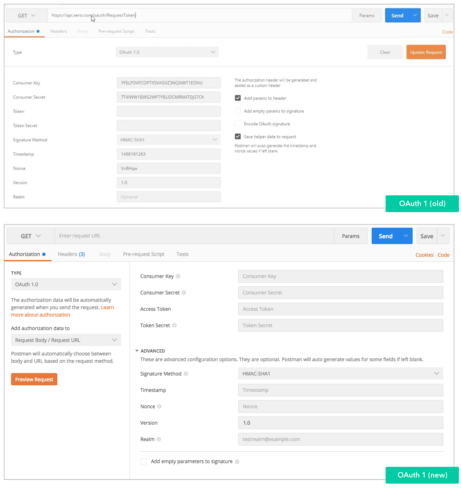
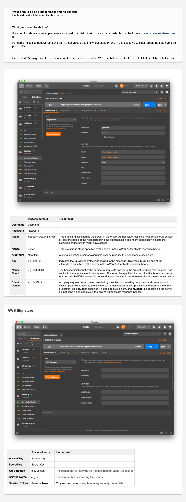

OVERVIEW
Project overview
Authorization is a hard problem in Postman. There are a LOT of authorization methods, with each having their own set of rules. Designing flows to support ALL the different authorizations was particularly challenging because it required understanding how different types of authorizations work. This project required me to work really closely with the engineers to learn about authorization and get regular feedback on the designs.
MY ROLE
Responsibilities
As the only designer working on this feature, my responsibilities included:
- Identifying the problems associated with the previous auth flows by going through feature requests on github
- Working really closely with engineering to define the new flows
- Documenting design decisions and making high fidelity mocks for the new flows
- Writing UX copy (tooltips, helper text etc.)
- Working with engineers to ensure high-quality implementation
- Designing analytics events to track user interactions
DESIGN DOCUMENT
Snippets from the design document
Since this feature required involving the engineers in the design process, I created an internal wiki page where I shared the designs and wrote all the UX copy as well as the analytics events.
